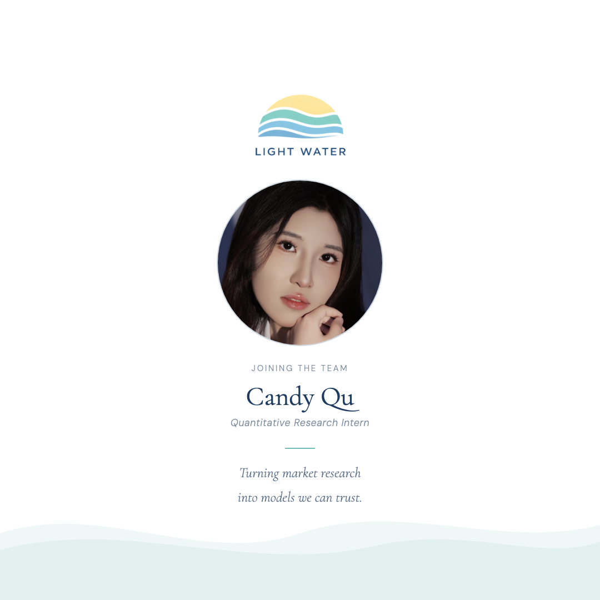

We're pleased to announce that Candy Qu has joined Light Water Capital as a Quantitative Research Intern on our Systematic Strategies team.
Candy joined on November 2 and comes to us from the fundamental side of the market. Before Light Water, Candy spent consecutive summers as an equity research intern at Shenwan Hongyuan Securities in Shanghai and at CITIC Securities, and currently works as a quantitative research intern at China Construction Bank (Asia). Candy is completing a BFA at the Rhode Island School of Design alongside coursework in probability and statistics at Brown University.
What Candy Will Be Working On
Candy's time is split evenly between two tracks.
The first is collaborative. Working directly with our founder, Candy will build a dataset of market-wide volume metrics and look for patterns that could support a monthly or quarterly rebalancing strategy. The starting point is our morning volume scanner, a daily check of time-of-day relative volume across sector and theme ETFs. Its universe, baseline and data-quality rules become the rubric for weekly, monthly and quarterly horizons. The work is exploratory, and ruling an idea out counts as a result.
The second is independent. Candy will develop an original thesis, in equities, macro or cross-asset, and take it from hypothesis to a defensible backtest. We're looking for edges rooted in market structure, flows or macro relationships, not simple technical setups. Candidate strategies go through walk-forward, Monte Carlo and regime testing with our in-house tools, including July Backtester, our open-source Python engine. Any strategy put forward for deployment comes with a one-page Defense Summary, presented to the team, that explains why the edge is structural rather than the product of parameter overfitting.
Building the Team
We hire for impact, not headcount. Interns here get real responsibility early, and we say so publicly: we acknowledge them on LinkedIn, write about the work they produce, and encourage them to publish under their own byline in The Dispatch. That includes Candy, and we hope to share Candy's research here as it develops.
Welcome to the team, Candy. We're looking forward to seeing what you build.
Leave a comment - join the conversation
Share your thoughts, questions, or insights on this article. We'd love to hear your perspective.
Comment on LinkedIn